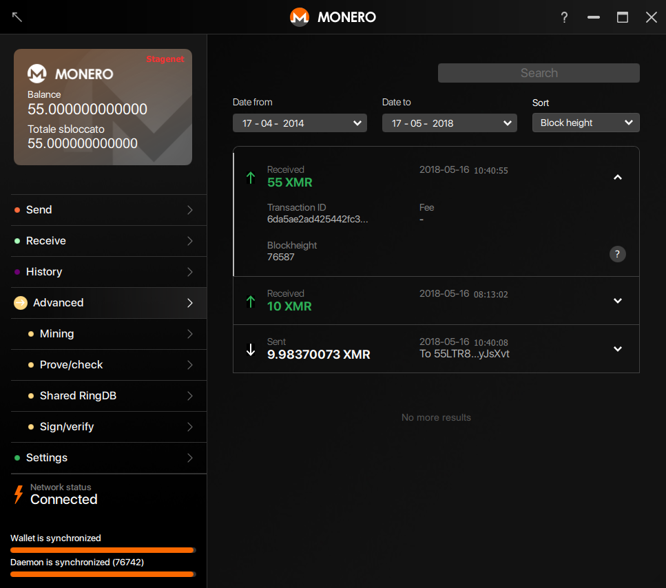
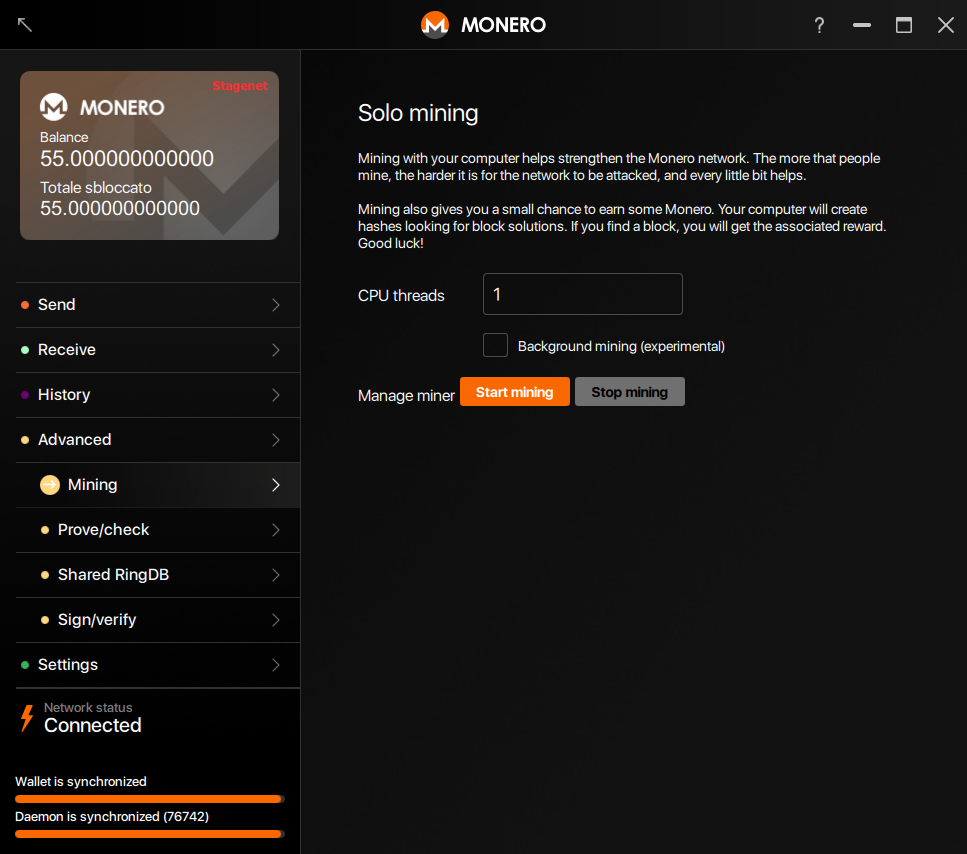
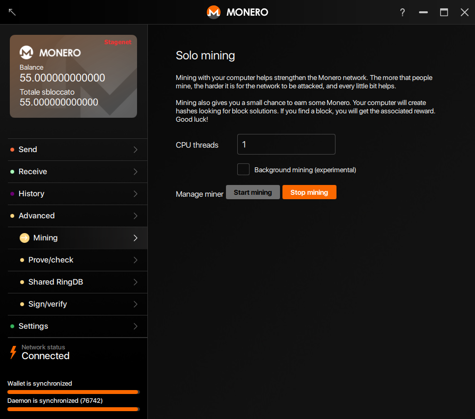

How to solo mine with Monero GUI
It is very easy to solo mine with the official GUI. If you have not done so already, go to the Monero downloads page and download the official GUI for your operating system. Then, run the setup and be patient as Monero synchronizes with the network. You should see that it displays "Connected" in the lower left corner.

Click on the "Advanced" tab. You should see that several other options appear. Now click on the "Mining" sub-tab.

You should now have an option to start mining. You can optionally change the number of threads to mine with. For optimal efficiency, you should mine with your CPU's cache divided by 2. You will need to look up your CPU's specs on the manufacturer's website. If you are unsure, leave the number of threads at 1. Click the "Start mining" button.

You are now mining with the network, as you can see on the bottom of the image. In this example, the computer is contributing 23 H/s to the Monero network. Mining helps keep the network secure, and you may get lucky and receive a reward for protecting the network.
To stop mining, simply click the "Stop mining" button.